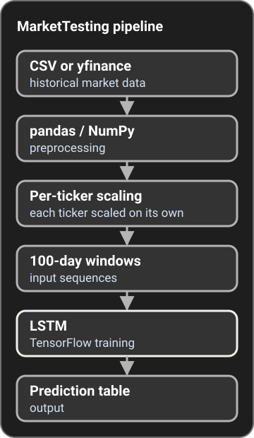

MarketTesting
A data pipeline I built on my own for financial time series, from market data ingestion to a prediction table.
Screenshot: prediction table
Project
What it is
MarketTesting is a Python project that ingests historical market data from CSV or yfinance, turns it into 100-day windows for LSTM training, and produces prediction tables.
What I built
- The entry point, and the model and training structure around a
StockModel. - CSV and yfinance data pull paths. On the
LSTM-feature-implementbranch, I extended them with general CSV ingestion and VIX retrieval. - pandas and NumPy preprocessing, feature scaling with a scikit-learn
RobustScaler, and 100-day input windows. - TensorFlow LSTM training with early stopping on validation loss, and a check that skips tickers whose scaled data is out of range.
- Data logging and the prediction-table output.
- A reorganization into a
srcpackage.

Screenshot: terminal run
Code: Benjamin-Elmore/MarketTesting on GitHub. The pipeline above is the default main branch at 79f6e12. The VIX and general CSV work is on the LSTM-feature-implement branch.